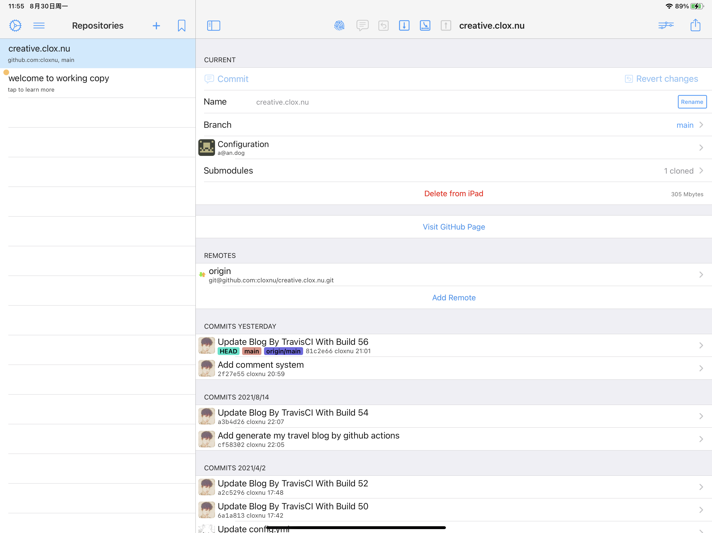
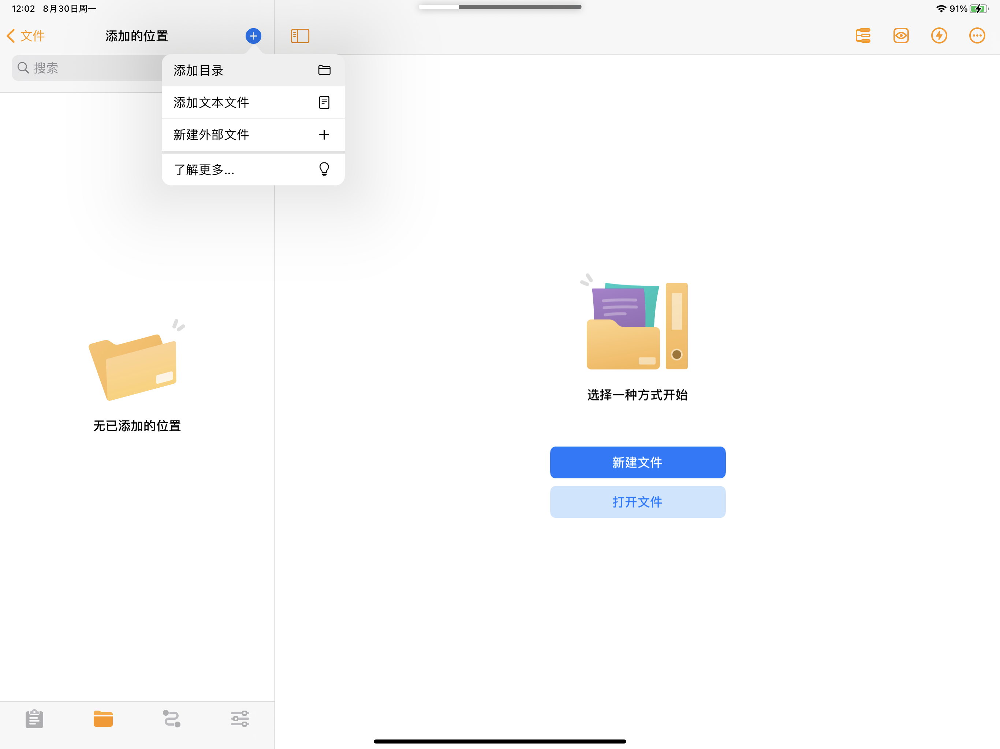
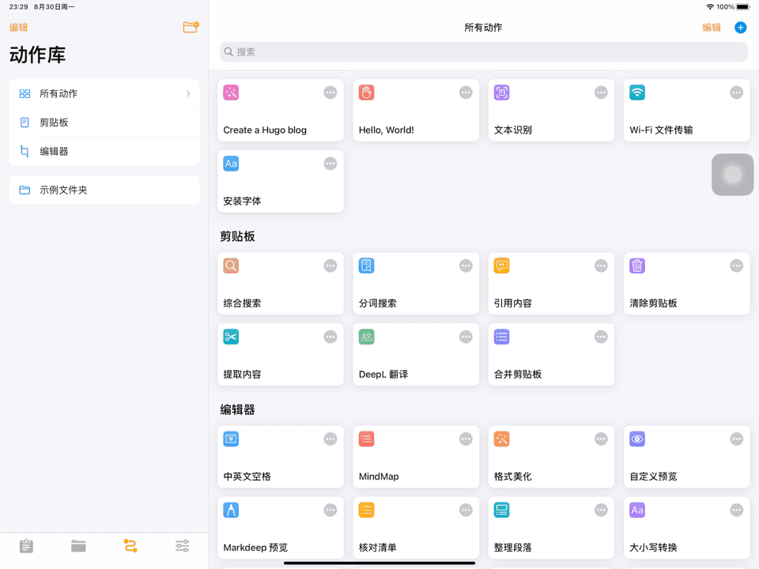

本文来自生产力 ℙ𝕣𝕠𝕕𝕦𝕔𝕥𝕚𝕧𝕚𝕥𝕪 系列文章。
我们知道，在一台安装了 Hugo 命令行工具的电脑上，只需运行命令
$ hugo new ...
即可创建一个新的 blog。
为了发挥 iPad Pro 的「生产力」属性，我使用 Taio 的「动作」实现了此命令，因此可以在 iPad Pro 上高效快速地撰写 blog。
首先使用「Working Copy」拉取 GitHub 上的 blog 远程仓库。

然后打开 Taio，将刚刚拉取下来的远程仓库的本地地址添加到 Taio 的「添加的位置」中。


添加完成后，在「动作库」中创建新动作，取名叫「Create a Hugo blog」。

以下是一个创建新 blog 的简单版本，运行之后会要求输入 blog 目录名，标题，以及类别，然后会在当前目录下创建这个目录，以及这个目录下的 index.md。
PS：这里添加到 blog 的当前日期符合 ISO 8601 标准，时间格式为 yyyy-MM-dd'T'HH:mm:ssxxx
然后将写好的动作拖移到「编辑器」文件夹中，意味着可以在编辑器的快捷动作里运行。

在某一分类文件夹下的任意文件里，点击右上角的闪电标志，运行「Create a Hugo blog」即可。

使用 Taio 写完整篇文章后，最终回到「Working Copy」，Commit & Push 自己的更改。剩下生成 HTML 的环节就交给 Travis CI 或者 GitHub Actions 去完成，详细配置请看 使用 Travis CI 自动部署 Hugo 站点
PS：如果你的 GitHub 账号拥有 GitHub Student Developer Pack，则可以不需要为「Working Copy」购买 Pro。
本文使用 Taio 编辑，且仅使用 iPad Pro 进行发布。